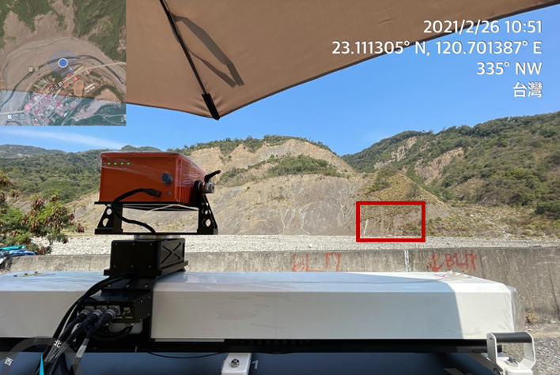
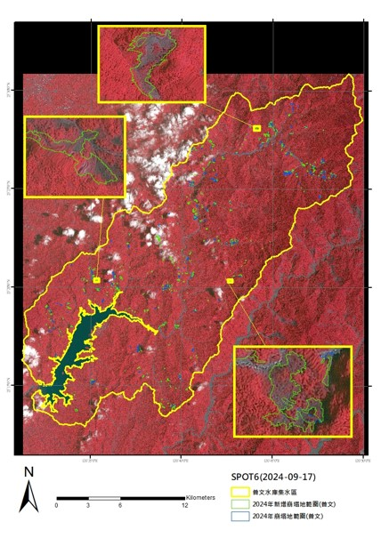
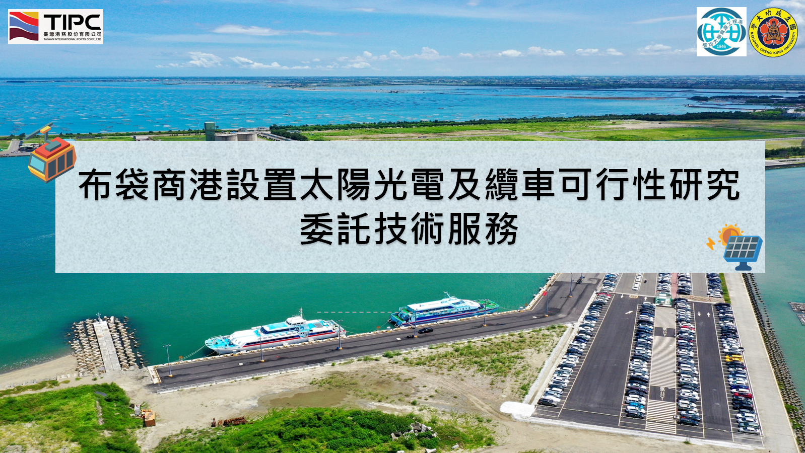
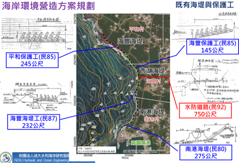

專案成果
遙測 × AI × WebGIS

石綿建材普查與管理系統建置
結合高解析衛星影像與深度學習，建立全國石綿瓦屋頂辨識與 WebGIS 管理系統， 提供環保主管機關查詢與管理介面。

石綿瓦辨識 AI
利用 YOLOv8 與 CNN 模型進行石綿波浪板屋頂之高精度自動辨識， 並整合多期影像進行變遷偵測與普查更新。

水保局：邊坡崩塌預警系統
建置地面差分干涉雷達（GBSAR）監測系統，結合自動化資料處理流程與預警門檻， 提供即時邊坡位移監控與崩塌預警服務。

國土利用監測：崩塌地面積判釋
利用 Google Earth Engine 結合隨機森林與深度學習， 自動化判釋五大水庫集水區崩塌地面積，支援國土變遷監測業務。

107–108年度青螺重要濕地（國家級）生態調查
結合空拍影像與現地調查，監測青螺國家重要濕地內水鳥族群分布與棲地利用， 提供保育管理決策依據。

臺灣港務：布袋商港太陽光電與纜車可行性
針對布袋商港進行太陽光電設置潛力評估及纜車系統可行性分析， 結合 GIS 空間分析提供港區開發建議。

海岸環境營造與防護規劃
執行海岸環境現況調查與防護規劃，整合遙測影像、海岸地形與水文資料， 提供海岸保育與管理策略建議。
- 102–103年度 農委會水土保持局委託研究計畫
- 103–104年度 台糖農地作物辨識遙測分析
- 104–105年度 林務局植被監測計畫
- 105–106年度 地方政府GIS圖資整合計畫
- 106–107年度 農業部農地利用調查計畫
- 107年度 國家災害防救科技中心研究合作計畫
- 108年度 臺南市政府空間資料更新計畫
Project Portfolio
Remote Sensing × AI × WebGIS
Asbestos Building Material Survey & Management System
Combining high-resolution satellite imagery and deep learning to build a national asbestos roof detection and WebGIS management system for environmental authorities.
Asbestos Roof Detection AI
High-accuracy automated detection of asbestos corrugated roofing using YOLOv8 and CNN, with multi-temporal change detection for survey updates.
SWCB: Slope Failure Early Warning System
Ground-Based SAR monitoring system with automated data processing and warning thresholds for real-time slope displacement monitoring and landslide early warning.
National Land Monitoring: Landslide Area Mapping
Automated landslide area mapping for five reservoir watersheds using Google Earth Engine with Random Forest and deep learning for national land change monitoring.
Qinglu National Wetland Ecological Survey (2018–2019)
Monitoring waterbird population distribution and habitat use in the Qinglu National Important Wetland using UAV imagery and field surveys.
Taiwan Ports: Budai Port Solar & Cable Car Feasibility
Solar power installation potential assessment and cable car system feasibility analysis for Budai Commercial Port using GIS spatial analysis.
Coastal Environment Development & Protection Planning
Coastal environment survey and protection planning integrating remote sensing, coastal topography, and hydrological data for conservation and management strategies.
- 2013–2014 Soil & Water Conservation Bureau commissioned research
- 2014–2015 Taiwan Sugar Corporation agricultural land crop recognition
- 2015–2016 Forestry Bureau vegetation monitoring
- 2016–2017 Local government GIS data integration
- 2017–2018 Council of Agriculture farmland use survey
- 2018 National Science and Technology Center for Disaster Reduction collaborative research
- 2019 Tainan City Government spatial data update